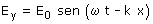
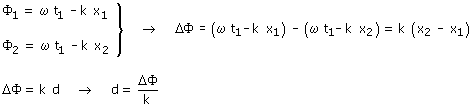
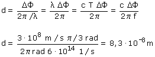
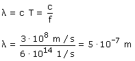

a) Una onda luminosa propaga un campo eléctrico y otro magnético perpendiculares a la dirección de propagación y entre sí. Para describirla basta con estudiar uno de los campos, por ejemplo el eléctrico:  Calculamos la fase espacial, en el instante t1, en los puntos x1 y x2 (x1 + d)  Observa que hemos restado a la primera ecuación la segunda para que la diferencia de posiciones sea positiva y resulte una diferencia de fase positiva  Otra forma de hacerlo:  La longitud de onda es 5·10-7 m lo que
significa que en esta distancia la fase cambia en 2·π rad |